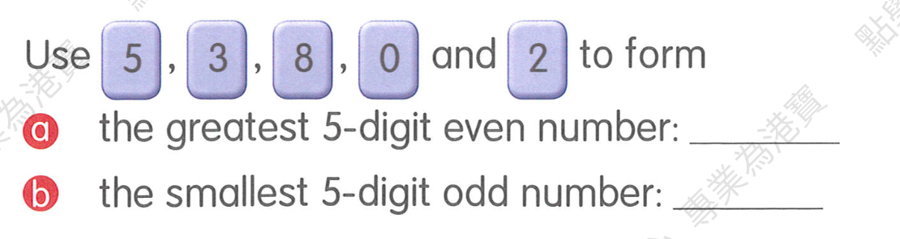
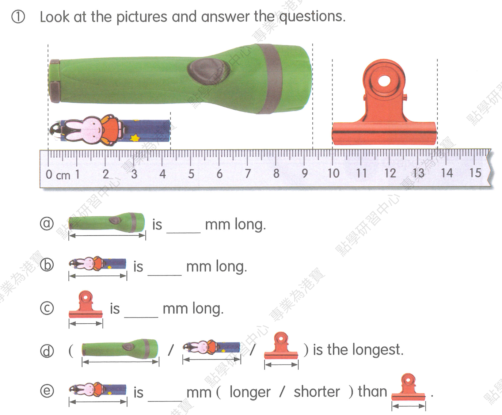
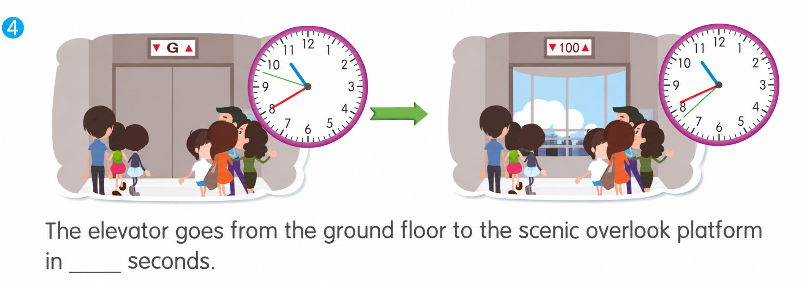
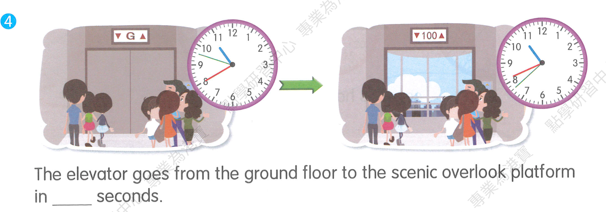
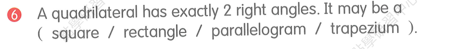
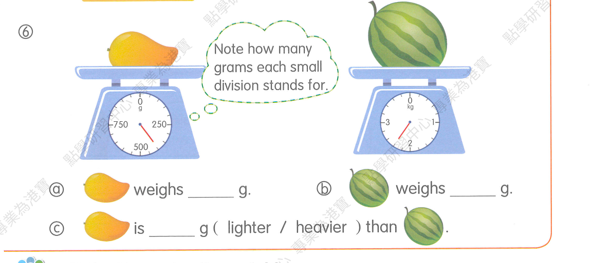

三年级 / Unit 1 五位数 / 组数：最大偶数与最小奇数
MA-G3-2026-09-20-001 · 已抽取
查看答案与老师原图
(a) 85320; (b) 20385
每张数字卡用一次。最大偶数按降序排列且个位为偶数，得 85320；最小奇数为 20385。原文答案 81320 含题目没有的数字 1，已纠正。

本表保留本轮已抽取的三年级数学错题，本轮不再抽取，整轮抽完后重新入池。已抽取 5/135 题。
(a) 85320; (b) 20385
每张数字卡用一次。最大偶数按降序排列且个位为偶数，得 85320；最小奇数为 20385。原文答案 81320 含题目没有的数字 1，已纠正。


(a) 93 mm; (b) 43 mm; (c) 37 mm; (d) the torch (first picture); (e) 6 mm, longer
完整尺图及5小题为一组。手电筒0–9.3 cm；钥匙扣0–4.3 cm；夹子10–13.7 cm，长37 mm。43−37=6，钥匙扣更长；老师原答案“6；shorter”中的shorter为确定笔误，更正为longer；原DOCX及答案原文保留。


50 seconds
两个完整钟面、电梯G/100楼层图及题干为一组。老师答案核对一致：秒针由48秒走到下一分钟38秒，60−48+38=50秒；清图保留三根指针与全部刻度。在原横线填空。


trapezium
A right trapezium can have exactly2right angles. Squares/rectangles have4; a parallelogram with a right angle is a rectangle and has4.


(a) 400 g; (b) 2400 g; (c) 2000 g, lighter
Left scale divisions50g, needle400g. Right scale divisions0.2kg, needle2.4kg=2400g. 2400−400=2000g; mango is lighter.
